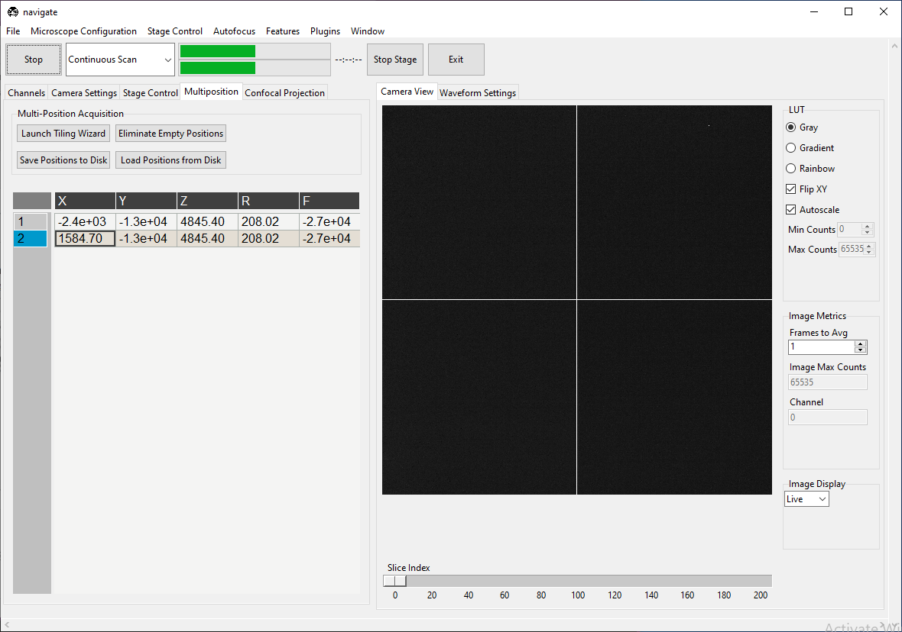
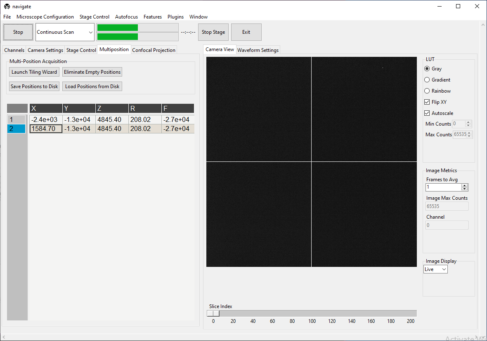
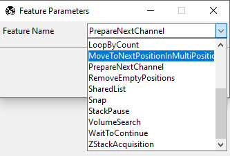

Write A Smart Acquisition Routine (Intermediate)
navigate’s feature container enables us to write acquisition routines on the fly by chaining existing features into lists. Please see Currently Implemented Features for a complete list of features. Users can build additionals feature within plugins.
In this guide, we will use existing features to write a routine that scans through an imaging chamber and takes z-stacks only where it finds the sample.
Suppose there are two positions listed in the multiposition table, one containing tissue and one empty, as shown below.
 

We will build a feature that scans both positions, but only takes a z-stack at the one
containing tissue. To access the GUI feature list editor, navigate to
. A window titled “Add New
Feature List” will pop up. Enter TestFeature in the text box at the top of the
popup. Enter
[{"name": PrepareNextChannel}]
in the text box at the bottom of this popup and press Preview. The window should appear as below.

The square brackets [] create a sequence of events to run in the feature container.
The {} braces contain features. In this case, we have a single feature,
PrepareNextChannel, which will set up the next color channel for acquisition. The
complete sequence (as it stands) will take an image in the first
selected color channel.
We can build much of the rest of our desired acquisition in the GUI. Right-click on the
PrepareNextChannel tile to reveal the editing menu.

Select Insert After. A second copy of PrepareNextChannel will appear in
the feature list.

Left-click on this second tile to reveal a popup that allows us to select which feature we want to use in this tile.
Select MoveToNextPositionInMultiPositionTable and then close the popup. Your
feature list editing window should now appear as below.

Our feature now takes one image of the first selected color channel at each position in the multiposition table.
Now, right-click MoveToNextPositionInMultiPositionTable and press
Insert After. Click the new tile and change it to
DetectTissueInStackAndReturn. There are three options associated with this feature.

planes indicates how many planes of the z-stack this feature should check for tissue.
percentage indicates what percent of the total image must contain tissue for this feature to return
truethat tissue was detected. 1 indicates that the entire image contains tissue, 0.5 indicates that half of the image contains tissue, and so on.detect_func is one of the tissue detection functions in remove_empty_tiles. If this is set to
None, it defaults todetect_tissue(), which states that tissue is present if signal is above the Otsu threshold of the stack of images acquired.
In this example, if any plane meets the desired threshold, the feature will return
true and it will be acquired. If no plane meets the desired threshold, the feature
will return false
Now, right-click DetectTissueInStackAndReturn and press
Insert After. Click the new tile and change it to
LoopByCount.

We want to iterate over all of the positions in the multi-position table, so we will
set steps to experiment.MicroscopeState.multiposition_count.
Notice that the acquisition protocol does not appear to loop, but rather still moves
in a sequence. This is because all of the tiles are still in the sequence brackets
[]. We can now enclose the section of the protocol we want to loop in parentheses
() and press Preview to see the update.

Now, we set up one color channel to image (PrepareNextChannel), and then within
this channel visit every position in the multiposition table, and detect if there is
tissue. However, we do no yet make any decisions of what to do if tissue is found.
To do this, we will convert DetectTissueInStackAndReturn into a decision node.
To do this, we add true and false options within the feature braces:
{"name": DetectTissueInStackAndReturn,
"args": (1, 0.5, None),
"true": [{"name": ZStackAcquisition,"args": (False,False,"z-stack",),}],
"false": "continue",}
Our true argument tells the software what to do if tissue is detected. In this
case, we take a z-stack at the positions where tissue is found. The false
argument tells the software how to proceed if no tissue is found. In this case, the
continue option tells the software to keep moving through the loop to the next
position in the multi-position table. Press Preview to see the update.

DetectTissueInStackAndReturn now has a red border, indicating it is a decision
node. Click on it to access the decision node GUI.
This contains the same settings for DetectTissueInStackAndReturn we saw before, but
now also features GUI editing windows for the results of true and false
decisions arising from this node.
Close the node window and press Add in the “Add New Feature List” window. This feature is now available under and can be run in “Customized” acquisition mode.
Select “Customized” acquisition mode, select , and press Acquire. For the positions shown at the start of this guide, the software will go to the first position in the multi-position table, decide there is tissue present, and take a z-stack. It will then go to the second position in the multi-position table, find there is no tissue, and decide not to take a z-stack. It will then exit the loop as no more positions are available in the multi-position table.
Now you can use this feature or build another smart acquisition routine suited to your microscope’s needs.